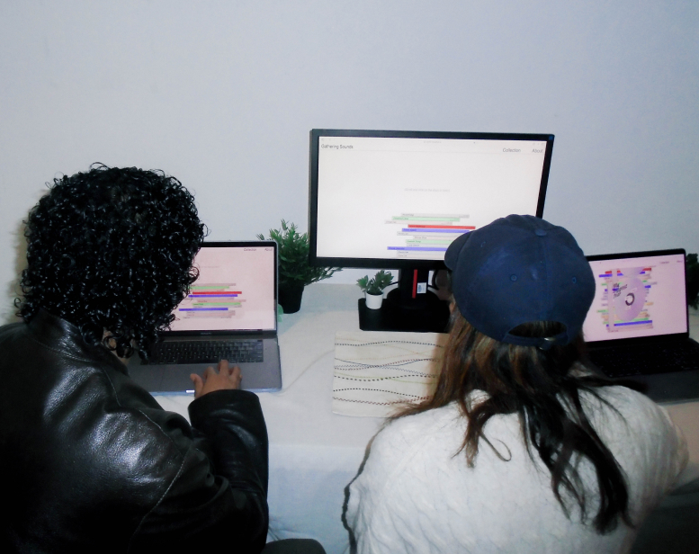
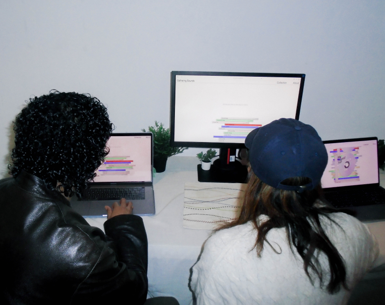

Gathering Sounds
Gathering Sounds is an ongoing sound archive project designed to capture an integral, but often overlooked essence of the human experience: sound. The website enables users to craft personal mixtapes by dragging and dropping their own recorded sound bytes onto a virtual disc, offering a diverse auditory exploration of everyday life from contributors worldwide.
With Ryan Yan and Un Jingjang
For Design Studio III
 
